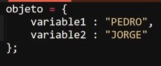
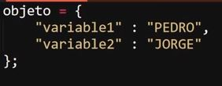
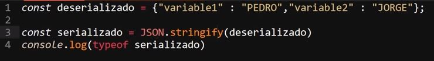
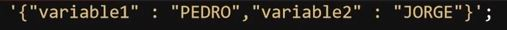
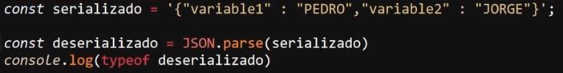
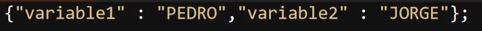

Peticiones HTTP
Una petición se trata de una solicitud que realiza el navegador a una base de datos, para obtener los datos a emplear en la visualización o ejecución de la página, por lo tanto esta conformada por una solicitud y una respuesta por parte de la base de datos.
Del mismo modo una petición es una acción que se realiza entre un cliente (navegador) y un servidor para su comunicación, sin embargo estas son solo esto, las peticiones HTTP no guardan ningún tipo de registro, su función es únicamente: solicitud - respuesta.
Datos Estructurados JSON (JavaScript Object Notation)
Se trata de un formato de estructura para almacenar datos, especializado en el envío de estos, su funcionamiento y sintaxis es muy similar a los de un objeto JS.
Ejemplo de Objeto JS

Ejemplo de formato JSON

Como se puede observar la única diferencia entre ambos formatos radica en que en JSON el nombre de los datos también se define entre comillas, mientras que en un objeto común lo hace como variables, esto ya que al encerrar el nombre de los datos dentro de comillas se elimina el riesgo de que surjan ciertos errores al enviar los datos, por ejemplo el intercambio de nombre entre los datos.
Serialización y deserealización
Se trata de la adecuación del formato JSON para el envío de los datos, al enviar y recibir datos es indispensable que estos se encuentren en un tipo de dato que sea aceptado y empleado por todas las partes involucradas, en la red antes de enviar datos estos deben de estar plasmados en tipo "string" antes de ser enviados.
En esto consiste la serialización y deserealización de datos JSON, se trata de convertir el objeto JSON en una cadena de texto, entonces es cuando se dice que este JSON se encuentra serializado, por otra parte cuando este se encuentra en formato "objeto" se dice que el JSON se encuentra des-serializado.
Para serializar un objeto JSON existe un método especial llamado "JSON.stringify()" el cual tiene la función de convertir un objeto JSON en una cadena de texto adecuada para su envío.

De este modo el JSON pasa a convertirse en una cadena de texto para su envío, por lo tanto el valor de la constante "serializado" sería:

Del mismo modo existe un método especializado en deserializar los objetos JSON para aquellas ocasiones en las que se realice la recepción de estos datos, el cual se llama "parse":

Por lo tanto el valor la variable "deserializado" sería:

JSON Polyfill
Se trata de un método que se enfoca en recrear las funcionalidades de cualquier método, función o recurso de JS, se usa para aquellos navegadores que no son compatibles con esos elementos, su funcionamiento se basa en buscar el código "polyfill" del método o función a utilizar e incorporarlo en un archivo JS en el proyecto, para de ese modo forzar la ejecución del elemento en navegadores no compatibles.
De ese modo en el caso de JSON el cual no es compatible con versiones antiguas de Internet Explorer se investigaría el código "polyfill" de los métodos "parse" y "stringify" para de ese modo recibir y enviar los datos sin error.